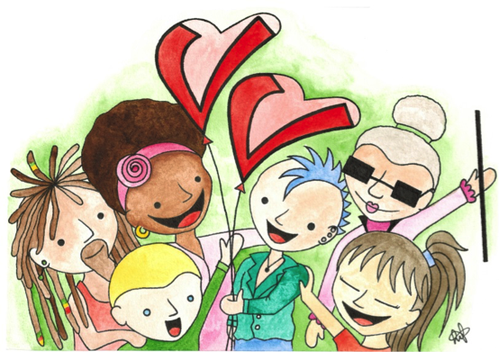

Quem tem coração DOA. Quem tem coração voluntário DOA TEMPO
28 de Novembro de 2016 às 08:00

Apesar de ocupar a 68ª posição no Índice Mundial de Solidariedade (são 140 países participantes) o Brasil está em quinto lugar entre os países com o maior número de voluntários e foi destaque no índice deste ano! Temos brasileiros mais generosos e solidários: 18% afirmaram ter doado tempo em atividades voluntárias.
O Voluntariado é uma maneira de fazer parte e contribuir para as mudanças e transformações e é um recurso que todos possuem para oferecer. Decidir e administrar tempo para trabalho voluntários é uma decisão pessoal, que passa pela curiosidade de conhecer realidades distintas da do dia a dia, o desejo e a motivação de vivenciar práticas solidárias e vai além, ao engajamento e comprometimento com uma causa ou projeto.
O movimento de voluntariado cresce e expande a cada ano. Aconteceu em outubro na cidade do México o grande encontro de lideranças voluntárias com mais de 50 países de todo o planeta. Uma oportunidade de trocar experiências e conhecimento mostrando que o voluntariado constrói ponte entre pessoas e países. A conferência é promovida a cada dois anos, desde 1970 pelo IAVE- International Association For Volunteer Effort, Com membros em mais de 70 países o IAVE existe para promover, fortalecer e celebrar o voluntariado de todas as maneiras conectando a rede global de líderes de voluntariado, ONGs, empresas e centros de voluntariado que partilham a crença no poder dos voluntários de fazer uma contribuição estratégica significativa para resolver os problemas mais urgentes do mundo.
Um dos programas do IAVE é a Rede Global de Centros Nacionais e locais de Voluntariado que promovem a ampliação do voluntariado em todo o mundo de forma confiável e eficaz.
Desta vez o Centro de Voluntariado de São Paulo esteve presente No congresso mundial do IAVE que levou a proposta de mostrar o quanto transformador o voluntariado é para quem recebe e também para quem faz a ação, onde doando parte de seu tempo cada pessoa está contribuindo para gerar impactos sociais. A magia de um encontro como este está exatamente de exaltar e mostrar o valor que o tempo tem onde quer que estejamos e o quanto é significativo em TODO o mundo a doação desse bem tão precioso que não há como se comprar ou conquistar: doar tempo é doar-se! Quem tem coração voluntário DOA TEMPO!
Compartilho algumas tendências e destaques do encontro deste ano, IAVE 2016, ressaltando temos mesmo que celebrar e festejar estarmos entre os 10 países com maior número de voluntários e ainda a participação relevante de projetos e programas apresentados por brasileiros, principalmente nos temas de estratégias e gestão para o voluntariado empresarial.
Destaques e tendências do Voluntariado IAVE 2016
- Valor e significado de quem doa tempo por meio do trabalho voluntário: o voluntariado está ao alcance de todos, não existem quem não possa participar;
- O voluntariado em situações emergências e desastres naturais: cidades resilientes e prontas para a ação;
- A gestão de times de voluntários: marcos legais favoráveis ao voluntariado; instrumentos de avaliação de impacto e resultado; mobilização e fidelização. A formação de voluntários e ferramentas de valorização, valoração e reconhecimento;
- Voluntariado e os Objetivos de Desenvolvimento Sustentável: convocatória para ação e alcance até 2030 de 17 objetivos globais propostos pelas Nações Unidas. Englobam temas bastante relevantes e que atendem a diversas demandas tais como saúde, pobreza, fome, empregabilidade, questões ambientais, de gênero, inclusão, justiça e garantia de direitos entre outros;
- Programas de Voluntariado empresarial: plataformas de gestão, ferramentas de medir impacto, as boas práticas de empresas locais e globais, ações pontuais e contínuas,. O voluntariado e o desenvolvimento de talentos e habilidades pessoais e profissionais, estratégias para a implantação e manutenção dos programas;
- Plataformas e mídias sociais para a promoção e o encontro de oportunidades de trabalhos voluntários. O papel facilitador de centros e movimentos de voluntariado pelo mundo
- Redes e alianças: organizações sociais, empresas, escolas e universidades e governos atuando pelo e por meio o voluntariado. Intercâmbios e voluntariado internacional;
- Tecnologia e o voluntariado na era digital: efeitos positivos e negativos para que o verdadeiro valor do voluntariado não seja perdido
Desafios do Voluntariado iave 2016:
- Participação de voluntários em causas que apresentam grandes demandas mas são também bastante desafiadoras como por exemplo com refugiados, ou comunidades bastante vulneráveis
- Ações transformadoras com impactos e resultados monitorados e medidos.
- Governos que apoiam e incentivam as ações solidárias e cidadãs por meio do voluntariado
Para saber mais:
Giving Index 2016:
www.idis.org.br
www.voluntariado.org.br
IAVE:
www.iave.org
Silvia Maria Louzã Naccache, Graduada em ciências biomédicas pela Universidade Federal de São Paulo – UNIFESP, é coordenadora do Centro de Voluntariado de São Paulo –CVSP desde julho de 2003. Atua com voluntariado, terceiro setor e responsabilidade social. É Conselheira voluntária da Associação Vaga Lume e membro organizador do Grupo de Estudos de Voluntariado Empresarial.
Publicado por

Notícias mais populares
Gestão
Em agosto de 2017, a revista ÉPOCA e o Instituto Doar divulgaram a primeira ediç&...
Contexto e tendências
Criado para tornar mais transparentes as parcerias entre a administração públic...
Profissional captador
A captação de recursos é fundamental para a sustentabilidade de uma organiza&cc...